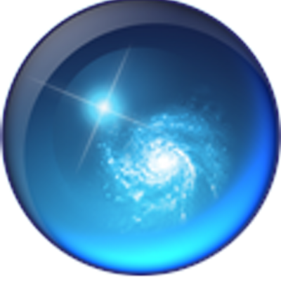
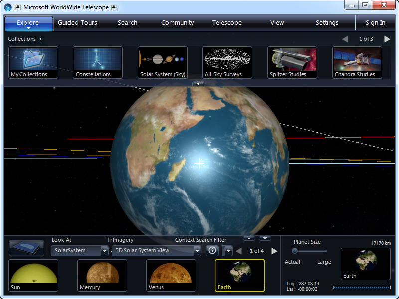
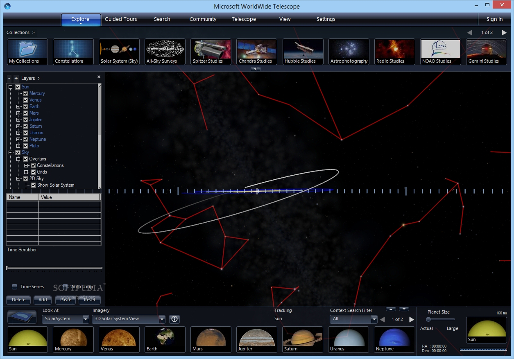

Explore the universe in four dimensions
|  | WorldWide Telescope 1.6.1 Explore the universe in four dimensions |
From web to desktop to full-dome planetarium, WorldWide Telescope (WWT) enables you to explore the universe, bringing together imagery from the best ground- and space-based telescopes in the world and combining it with 3D navigation. With WWT, you can experience narrated guided tours from astronomers and educators featuring interesting features in the sky. You can research and import your own data and visualize it, then create a tour to share with others. Navigate seamlessly through 3D spherical environments: the Sky, Planets and our Solar System Access to hundreds of terabytes of sky, earth and planet data View, create, and edit guided tours Experience the 3D Solar System view with moon orbits, asteroids, and more Access billions of objects in a web-based astronomical catalog Use touch controls for touch-screen navigation Travel 2,000 years forwards and backwards in time |
  |
{kind=link}
{kind=link}